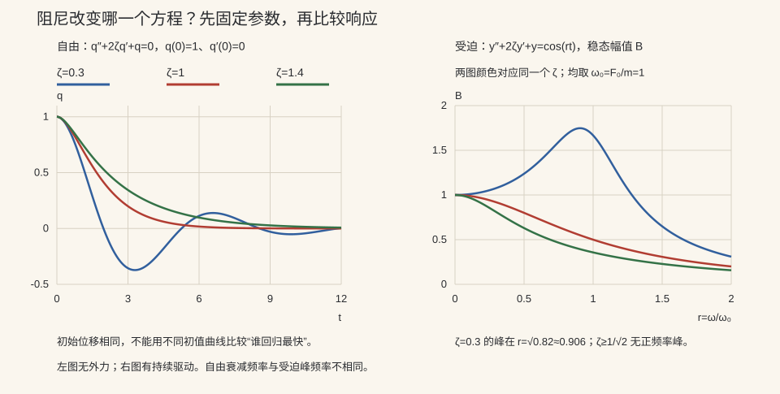

本页目录
常微分 II · 高阶线性方程
高阶线性方程是 ODE 课的主体，也是线性代数照进分析的样板间：解集是线性空间，解方程 = 找一组基。常系数情形有完整算法（特征方程），物理上对应一切振动现象——阻尼、共振都在本页。
学习层：频率“撞根”时，振幅为什么长出一个 \(t\)？
1. 具体情境：同一只无阻尼振子接受不同频率的推力
对零初值问题
当 \(\omega\neq\omega_0\) 时
两个相近频率会形成拍频；当 \(\omega\to\omega_0\) 时，分母和括号同时趋零，极限不是无穷常数，而是
这个 \(t\) 正是待定系数法里“试探频率撞上特征根就乘 \(t\)”的解析来源。
2. 先预测：根、基与受迫响应
- 特征根为 \(-1\pm2i\) 时，实基本解组应包含指数包络、三角振荡，还是两者兼有？
- forcing 频率逐渐靠近 \(\omega_0\) 时，有限观察窗里先看到无限振幅，还是越来越慢的拍频包络？
- 无阻尼共振的线性增长能否直接外推到有阻尼、非线性或会损坏的真实结构？
3. 最小实验：把代数重根与时间轨迹对齐
无 JavaScript 时的静态读法：
| forcing 比 \(\omega/\omega_0\) | 解析结构 | 有界性 | 证据边界 |
|---|---|---|---|
| \(0.7\) | 两个不同频率之差 | 理想模型内有界 | 包络由频差决定 |
| \(0.98\) | 慢拍频 | 仍有界，但有限窗可很大 | 不能把近共振误称精确共振 |
| \(1\) | \(t\sin(\omega_0t)\) | 无阻尼线性模型内无界增长 | 任意正阻尼会改变长期响应 |
实验揭示后可移动 forcing 比与观察终点，SVG 同时显示位移与包络，账本给出特征根类型、Wronskian 证书、最大振幅和“精确/近似共振”身份。有限采样只画当前解析解，不能替代一般线性 ODE 的存在唯一性与基本解理论。
4. 两条不能混用的 Wronskian 结论
对同一个 \(n\) 阶齐次线性方程、且系数在区间上连续的一组解，Wronskian 在某点非零等价于它们线性无关；Abel–Liouville 公式还说明它要么处处非零，要么处处为零。对任意可微函数，某一点 \(W=0\) 并不能推出线性相关。实验只对解析基本解组出证书。
1. 解的结构（高代观点）
\(n\) 阶线性方程 \(y^{(n)} + a_1(x)y^{(n-1)} + \cdots + a_n(x)y = f(x)\)。
定理（齐次解空间） 在最高阶系数不为零且标准化后各系数在区间上连续时，齐次方程（\(f = 0\)）的解集是 \(n\) 维线性空间（叠加原理给"是线性空间"；存在唯一性定理给"维数恰为 \(n\)"——初值 \((y, y', \dots, y^{(n-1)})(x_0)\) 与解一一对应，\(\mathbb{R}^n\) 的坐标）。通解 = \(C_1 y_1 + \cdots + C_n y_n\)（\(y_i\) 为基本解组）。
线性无关的判器（Wronskian）：\(W(x) = \det[y_j^{(i-1)}]\)。对同一齐次线性方程的一组解，线性无关 \(\iff W\) 在某点非零（随后由 Liouville 公式知处处非零）；对任意可微函数，单点 \(W=0\) 不能反推相关。
非齐次结构：通解 = 齐次通解 + 任一特解（与高代 II 线性方程组 \(x = x_0 + \ker A\) 逐字同构——线性问题的普适语法第三次出现）。
2. 常系数齐次：特征方程算法
代入试探解 \(y = e^{\lambda x}\)（求导=乘 \(\lambda\)，指数函数是微分算子的特征向量——"特征"二字与高代 V 同源非巧合），得特征方程 \(\lambda^n + a_1\lambda^{n-1} + \cdots + a_n = 0\)。按根的三种形态拼基：
| 特征根 | 贡献的基解 |
|---|---|
| 单实根 \(\lambda\) | \(e^{\lambda x}\) |
| \(k\) 重实根 \(\lambda\) | \(e^{\lambda x},\ xe^{\lambda x},\ \dots,\ x^{k-1}e^{\lambda x}\) |
| 复根对 \(\alpha \pm i\beta\) | \(e^{\alpha x}\cos\beta x,\ e^{\alpha x}\sin\beta x\)（Euler 公式取实虚部） |
（重根多出的 \(x^k\) 因子：极限视角是两个相邻单根解 \(\frac{e^{\lambda_2 x} - e^{\lambda_1 x}}{\lambda_2 - \lambda_1} \to x e^{\lambda x}\)——导数的定义现身。）
3. 非齐次特解：两把武器
待定系数法（\(f\) 是"多项式 × 指数 × 三角"型专用）：按 \(f\) 的形态设同型特解；若试探的指数/频率撞上特征根，乘 \(x\)（撞几重乘几次）——"共振修正"，遗漏它是本章头号错因。
常数变易法（万能，\(f\) 任意）：设特解 \(y^* = C_1(x)y_1 + C_2(x)y_2\)，解线性方程组（系数矩阵恰是 Wronskian 矩阵）得 \(C_i'\)，积分即可。二阶情形的结果值得记：\(C_1' = \frac{-y_2 f}{W},\ C_2' = \frac{y_1 f}{W}\)。
Euler 方程一嘴：\(x^2 y'' + axy' + by = 0\) 换元 \(x = e^t\) 化常系数（或试 \(y = x^k\)）。
4. 振动：本章的物理灵魂

弹簧-质量-阻尼系统 \(my'' + cy' + ky = F(t)\)（RLC 电路同型——同一方程统治力学与电学）。
自由振动（\(F = 0\)）三态（特征根判别式定性）：
- 欠阻尼（\(c\) 小，复根）：\(e^{-\alpha t}\) 包络下的衰减振荡；
- 临界阻尼（重根）：在固定线性二阶模型与常见初值比较中给出最快的无振荡回归（车门缓冲器的理想化设计点）;
- 过阻尼（两负实根）：缓慢爬回。
受迫振动与共振：\(F = F_0\cos\omega t\)，稳态响应幅值在 \(\omega\) 接近固有频率 \(\omega_0 = \sqrt{k/m}\) 时急剧放大；无阻尼且 \(\omega = \omega_0\) 时特解带 \(t\sin(\omega_0 t)\) 因子（待定系数的"乘 \(x\)"规则！）——振幅随时间线性增长，共振。数学（特征根重合）与物理（塌桥、秋千）在此互为注脚。
🔗 衔接：线性系统的矩阵版在下一页（特征方程 = 特征多项式将正式合体）；离散版（差分方程）已在随机过程 II 赌徒破产中用过同款特征根法；深度学习中 RNN 梯度的指数增衰（ai 课 06 讲）本质是同一套"特征值决定长期行为"。
5. 典型例题
例 1（三型混合） \(y''' - y'' + y' - y = 0\)：特征 \(\lambda^3 - \lambda^2 + \lambda - 1 = (\lambda - 1)(\lambda^2 + 1) = 0\)，根 \(1, \pm i\) ⇒ \(y = C_1 e^x + C_2\cos x + C_3 \sin x\)。
例 2（共振修正） \(y'' + 4y = \cos 2x\)：试探频率 \(2\) 撞上特征根 \(\pm 2i\) ⇒ 设 \(y^* = x(A\cos 2x + B\sin 2x)\)，代入得 \(A = 0, B = \frac14\)：\(y^* = \frac{x}{4}\sin 2x\)——振幅线性增长，共振的解析面目。
例 3（常数变易） \(y'' + y = \tan x\)（待定系数管不了 \(\tan\)）：\(y_1 = \cos x, y_2 = \sin x, W = 1\)；\(C_1' = -\sin x\tan x,\ C_2' = \sin x\)，积分得 \(y^* = -\cos x \ln|\sec x + \tan x|\)。\(\blacksquare\)
下一页：把 n 阶方程写成一阶方程组——矩阵指数、相图与稳定性，ODE 与线性代数的正式合体。